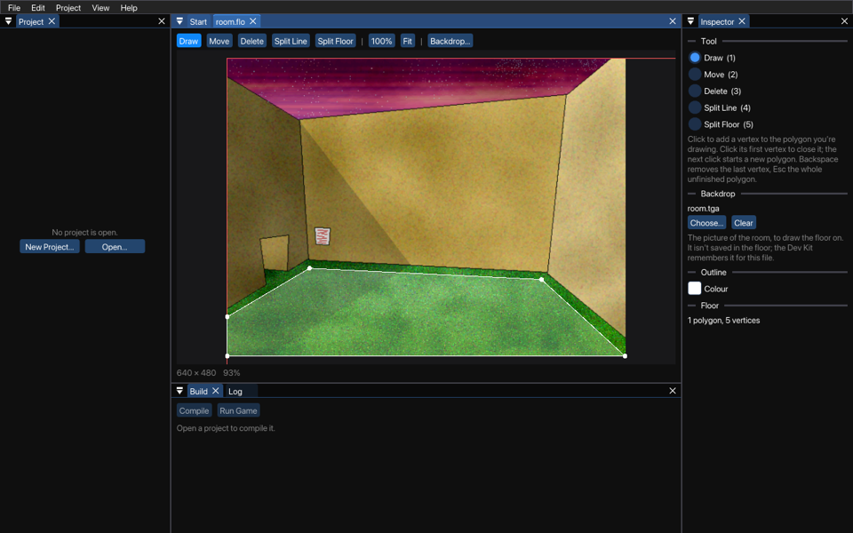

A SLUDGE floor plan is a group of convex polygons which may, or may not, be joined together. If one polygon is joined to another by a line (i.e. they share two vertices) characters can walk from one polygon to the other by crossing the shared line. Note that SLUDGE does not support characters crossing from one polygon to another where they meet at a point (i.e. they share only one vertex).
To define the walkable area(s) for a scene, make a new floor with File > New > Floor, or open one (a .flo file). Then load the main image for the scene with Backdrop... in the toolbar or in the Inspector, or drop the picture on the floor. The backdrop isn't part of the floor file; the Dev Kit remembers it for each floor.
Work out in your head where you want characters to be able to walk. Characters should not be able to walk up to the very edges of the actual floor... instead, make the edge of the walkable area roughly one footstep away from any walls or obstacles which appear in the image. This is how one of the floors of the verb coin example looks:

Now, start putting the floor onto the screen. The boundary of a floor is made up of straight lines between corners (vertices, as they're called in the program). Choose the Draw tool and click where you want to add a vertex. A line from the last vertex follows the mouse. When you're done, click the first vertex again to complete the walkable area. Clicking near a vertex takes that vertex, so that polygons can share their vertices exactly. While you draw, Backspace removes the last vertex you added, so that you carry on from the one before it, and Esc throws away the polygon you haven't completed yet. Both can be undone.
If the floor is a concave shape (it has at least one corner which pokes in rather than sticks out) you'll need to split it into two or more convex shapes (which only contain vertices which point outwards). The editor shows such a polygon in red. Choose Split Floor, and drag from one of the inwardly-pointing vertices to another vertex. A line will be added, splitting the appropriate segment of floor into two. Split into Convex Polygons in the Inspector does that for you, where it can, and so does saving a floor that needs it, after asking.
(The reason for this is that if a character is told to walk from one point to another, and both points are within the same section, the engine assumes the character can move in a straight line. This is the main principle behind the path-finding method used in SLUDGE.)
Choose a tool in the toolbar, in the Inspector, or with the keys 1 to 5.
Every change can be undone with Edit > Undo. When a tool can't do what you asked, the line under the picture says why.
The mouse wheel zooms in and out around the mouse. To move the picture, drag it with the middle or right mouse button, or hold Space and drag with the left one. 100% shows the picture at its size, and Fit shows all of it. The line under the picture shows where the mouse is, in the pixels of the picture.
If your scene has colours that make it difficult to see the floor plan, change the colour of the outline in the Inspector.
To load a floor, use the setFloor command. From that moment onwards, characters told to move by use of the moveCharacter command will (a) only move to within your defined floor plan and (b) if starting within the floor plan never leave it, automatically walking around obstacles and furniture. (Characters can still be moved to points off the floor by the forceCharacter command.)
SLUDGE and this SLUDGE documentation are copyright Hungry Software and contributors 2000-2012